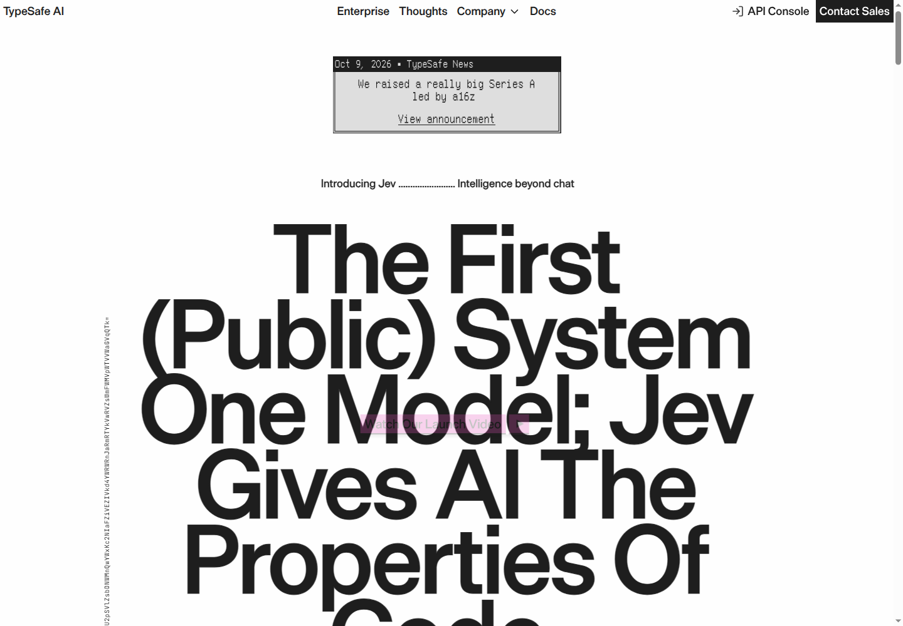
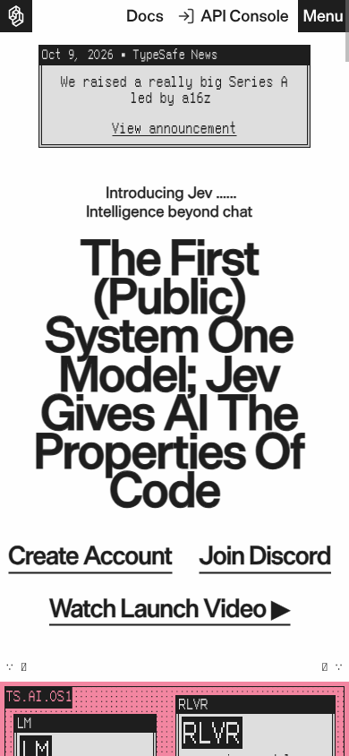
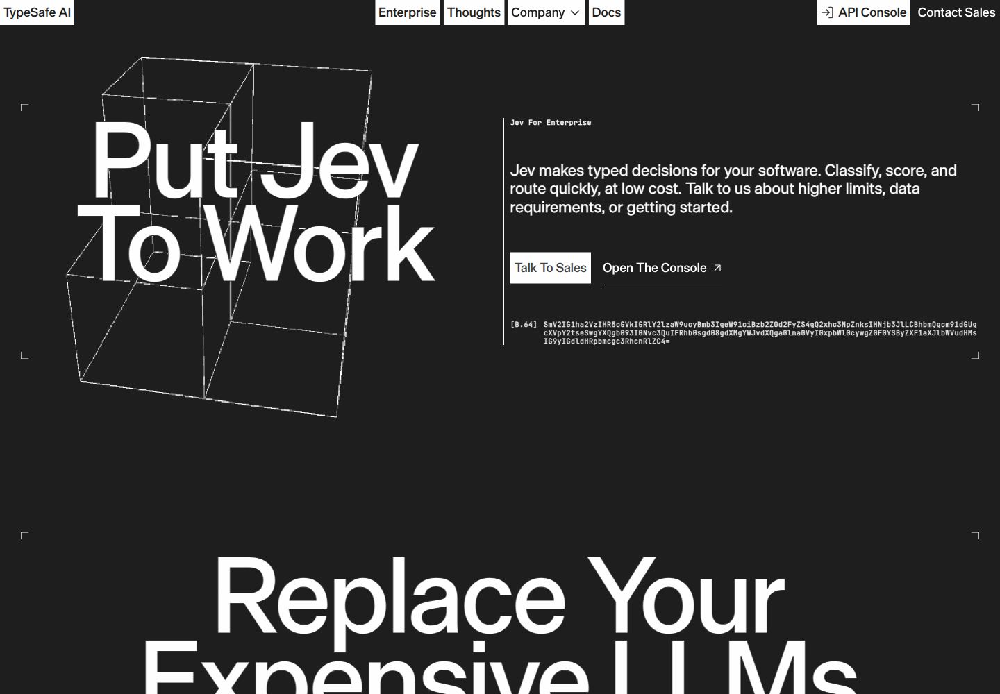
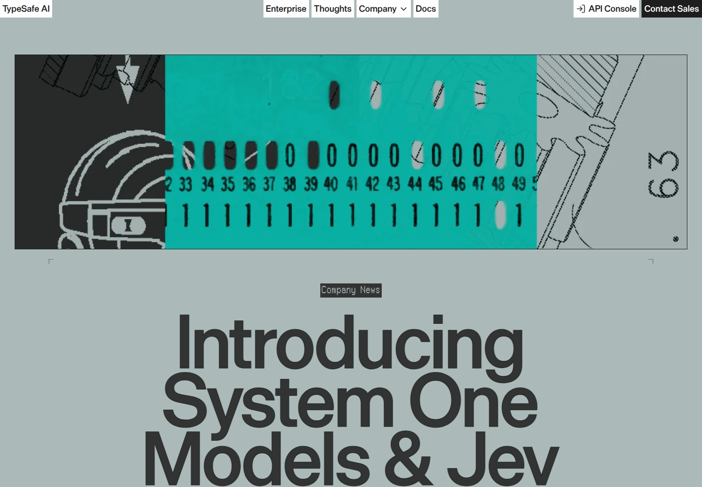
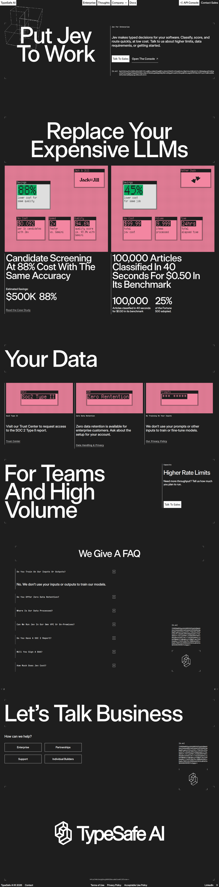

A visual study, not an official identity manual
The homepage.
Then the console.
Start with what TypeSafe actually looks like. Keep its paper, enormous ink type, literal wordmark, and sky desktop scene. Adapt the working window to claims triage—not the whole brand to generic SaaS.
Actual public-site screenshots and computed values are separated below from application recommendations. The guide uses a system sans-serif fallback; the screenshots preserve the real commercial display typography.
Independent reference. Claims One is an independent concept by Ayo Ahmed. Not affiliated with or endorsed by TypeSafe AI. TypeSafe AI, Jev, fonts, artwork, and screenshot content remain their respective owners' property.
Mock-only application direction. Built against Jev's documented API contract; the mock adapter mirrors real endpoints and response shapes. A real key can later be connected through one adapter file plus a server-side environment variable. This guide does not claim a live Jev connection or measured model performance. The site must visibly say “Mock demo.”
01 / Actual rendered evidence
Look at the source.
Direct observationThe homepage begins on a near-white canvas. The enormous headline, sparse navigation, pixel-system details, and later pink sky establish a desktop-OS world. Pink is a selective accent, not a full-page gradient.
Captured in Chrome after fonts loaded and lazy content was scrolled into view. Desktop: 1440 × 1000; mobile: 390 × 844; device scale factor 1. Animated content may differ between captures. Click any opening view for the original PNG; expand the archive for complete, uncropped pages.




Full-page archive / home desktop and mobile
Desktop original: 1440 × 11282. Mobile original: 390 × 10206. These framed previews scroll; the linked PNGs contain the complete pages.





Full-page archive / enterprise and launch article



Screenshot credit: TypeSafe AI, typesafe.ai. Reproduced for visual reference. These public-site captures are not Claims One application test results.
02 / Computed colors
Paper. Ink. Pink.
Direct observation#FEFEFE#1E1E1E#DEDEDE#C4C4C4#F386A1#E551BAThe main headline and wordmark compute to rgb(30,30,30); downstream editorial ink includes rgba(30,30,30,.86). The article canvas uses #ABBAB9. One plotted green is rgba(3,170,92,.74)—an observed demo accent, not a proven universal success token.
The pink/purple sky is a raster image. It must not be described as a scraped CSS gradient. Application token names above are recommendations attached to measured values, not names extracted from an official design system.
03 / Exact type and layout
The type does the work.
Direct observation| Element | Family / weight | Desktop size / leading | Mobile / tracking |
|---|---|---|---|
| Literal wordmark | Die Grotesk C Medium / 500 | 18 / 18; 97.1328px run | Reference tracking .54px |
| Main headline | Die Grotesk C Medium / 500 | 150 / 120 | 54 / 43.2; normal tracking |
| Supporting copy | Die Grotesk C Regular / 400 | 17 / 20.4 | 17 / 20.4; .85px tracking |
| Editorial CTA | Die Grotesk C Medium / 500 | 64 / 57.6 | 28 / 25.2 |
| Announcement caption | LisaTerminal Paper 2X3Y Medium / 500 | 18 / 18; .18px tracking | 16 / 16; .16px tracking |
| Base64 decoration | JetBrains Mono / 300 | 10 / 12; .5px tracking | Decorative, not a body style |
Fragment Mono is not the measured pixel-caption font. It is declared in public font resources and loaded on the launch article. LisaTerminal supplies the measured homepage's system captions; JetBrains Mono supplies its code decorations. Fragment Mono is our openly licensed portable console-label choice.
System fallback preview / not Die Grotesk
System One
for claims.
Arial is a no-purchase portability fallback. Exact type remains visible in the actual screenshots above; this sample does not claim identical glyphs.
Bundled Fragment Mono / OFL 1.1
CHOICE / distribution
SCORE / ordered levels
NOUL / probability of yes
Mock demo · human review
A restrained utility register. No invented reasoning transcript or fake terminal activity.
| Layout measurement | Exact observation |
|---|---|
| Desktop content | 1240px wide; x=92.5px inside 1425px content width at a 1440px viewport |
| Headline wrapper | 1024px maximum width; 10px horizontal padding; live headline width 1004px |
| Opening outer stack | 60px top padding; 40px gap |
| Headline inner stack | 50px gap; 200px bottom padding |
| Mobile intro/headline | x=20px; width=339.5px in the captured layout |
| Sky scene | 1240 × 800px at x=92.5px, y=1492.5px in the desktop capture |
| Radii / shadow | Most wrappers square; two image areas 4px radius; one video overlay 0 4px 4px rgba(0,0,0,.25) |
The floating windows also exist inside raster graphics. Rounded live console panels and larger shadows below are explicit adaptations, not computed universal homepage values.
04 / Provenance and licences
The literal mark. No invention.
Public text reproduced as an outline
Exact public glyphs.
The navigation logo is rendered text: “TypeSafe AI,” Die Grotesk C Medium, 18px / 18px, weight 500, .54px tracking. No dedicated navigation-logo image was observed.
The self-contained SVG outlines those glyphs at measured browser character positions, with a transparent 97.132813 × 18 viewBox. It has no font request, background, tracking code, or invented symbol.
TypeSafe AI trademark; independent reference rendering. The outline asset does not establish font or trademark reuse permission. Normalize the baseline within the 18px line box; preserve the aspect ratio.

Keep the menu light.
- Put the literal wordmark first, top-left, on paper; put Claims One beside it with a fine separator.
- Keep the wordmark's aspect ratio and casing. No extra symbol, stretching, violet glow, or replacement glyphs.
- Recommended application clear space: 12px; minimum displayed line-box height: 18px. These are not official trademark rules.
- Use base-aware app asset paths; this document uses relative paths so it opens directly without an application server.
Commercial display fonts are not bundled. Die Grotesk is owned by Klim Type Foundry and requires the appropriate licence. LisaTerminal's redistribution rights were not established. Do not hotlink either as a licence workaround. Obtain licensed local files from the owner if available; otherwise disclose the system sans-serif fallback. No purchase or permission is claimed here.
| Font / ownership | Exact observed source | Distribution boundary |
|---|---|---|
| Die Grotesk C Medium Klim, © 2026 | 4w6Hg5DeDzuWT6PSthKEwbacV0g.woff2 | Not bundled. Klim licence required. |
| Die Grotesk C Regular Klim, © 2025 | AjH8uNDZvXKC9xfhOZo8jIJKVss.woff2 | Not bundled. Foundry reference. |
| LisaTerminal Paper 2X3Y Medium | V2AZqQSDXyGgvnJfcbuPd1WaW0.woff2 | No established distribution licence; not bundled. |
| JetBrains Mono | Exact observed Google Fonts WOFF2 | Observed source only; not bundled. |
| Fragment Mono Project Authors, © 2022 | Exact observed Latin WOFF2 | Bundled under SIL OFL 1.1. Complete included licence; official licence source. |
Fragment Mono here is the open-source family, not a similarly named commercial Fragment family. Preserve its licence on distribution. Its Latin subset needs a system fallback for unsupported characters. Third-party imagery and trademark permission should be confirmed before broader commercial reuse.
05 / Application interpretation
A dark working window.
Not a dark rebrand.
Interpretation / recommended, not scraped
Use the literal homepage's light editorial opening and bounded sky scene. Put a dark utilitarian console inside that world. The enterprise page supports dark surfaces, but the claims-specific composition and rounded working panels are ours to define.
- System bar: TypeSafe AI first; Claims One second; restrained mono status.
- Hero: “System One for claims.” Large ink type, short direct copy.
- Working scene: sky-backed, staggered desktop windows—not decorative purple dashboard cards.
- Console: readable near-black surfaces, grey rules, Fragment Mono labels, tabular figures, complete probability displays, and explicit human-review states.
- Evidence: economics followed by source and Nuance, then “We give a FAQ.”
Console palette recommendations
This is a token display, not an application mockup or live result.
#171717#1E1E1E#262626#88D7A5#F2C37B#F386A1--console-bg: #171717;
--console-surface: #1e1e1e;
--console-raised: #262626;
--console-rule: #414141;
--console-text: #fefefe;
--console-muted: #b8b8b8;
--radius-window: 18px;
--radius-panel: 12px;
--radius-control: 8px;
--window-shadow: 0 24px 70px rgba(30,30,30,.22),
0 4px 12px rgba(30,30,30,.12);
Spacing adaptation: 4, 8, 12, 16, 24, 32, 48, 64px scale; 24–32px window padding; 16–24px gaps; minimum 44px targets. Use 16px / 1.5 body copy and 12–14px mono labels. Only display headings borrow the .8 line-height.
Interaction: ink on pink filled buttons; color plus literal status labels; 160–220ms purposeful transitions; respect reduced motion. No shimmering fake activity, endless terminal typing, fake reasoning transcript, or color-only decisions.
06 / Claim, evidence, nuance
Be direct. Then qualify.
Observed editorial registerEnterprise says “Put Jev to work” and “Classify, score, and route quickly, at low cost.” The homepage says “We give a FAQ.” The launch article follows bold claims with evidence and named Nuance sections. Keep the short, developer-native register; do not erase uncertainty.
| Recommended | Avoid |
|---|---|
| “System One for claims.” | Generic “revolutionary insurance intelligence” hype. |
| “Mock demo. Built against Jev's documented API contract.” | “Live Jev analysis” for fixture outputs. |
| “Confidence below your threshold. Send to an adjuster.” | “Guaranteed correct decision.” |
| “Synthetic evaluation data. Not measured Jev performance.” | “Validated accuracy” without a real evaluation. |
| “Based on TypeSafe's published workflow results.” | “Your claims will be 193.6x faster.” |
| “Nuance: policy checks remain in code.” | “Zero errors. Fully autonomous insurance.” |
Published economics are not our test results. The public site's 193.6x faster / 444.6x cheaper figures are workflow-evaluation results, not measured claims-triage guarantees. The launch article notes these are likely at the higher end of real-world gains. Its $42/billion input tokens, free output, and 70–500ms response time should always carry source and assumptions. A mock delay is not live service latency.
No exclusivity claim. Do not say this is the first insurance example or that TypeSafe has no existing auto-insurance work. This guide makes no such claim.
07 / Data honesty
Typed answers.
Visible uncertainty.
Official API distinctions
The API reference, primitives, and confidence docs inform the display design. Use the actual answer fields, not broad marketing shorthand.
- Choice: show
choice, allprobabilities, and returnedconfidence. Confidence is derived from the distribution; it is not simply the top probability. Maximum 255 options. - Score: show fractional
score, every level inprobabilities, the returnedlegend, andconfidence. Accepts 2–10 levels, not 255. API level indices start at 0; label any product-scale transformation explicitly. - Noul: show
noulbetween 0 and 1 as “Probability of yes.” Do not invent API confidence or probabilities fields. Near 0.5 already communicates uncertainty. - Parallel questions: several independent questions use the same state in one request. Routing is composed in application code. Do not invent a sequential reasoning narrative or an undocumented blanket 255-question limit.
- Calibration: confidence is not a blanket guarantee of domain accuracy. Fixture-fed charts stay labeled synthetic; thresholds require evaluation on the real use case.
Only public API documentation was used for these contract statements. No service call or paid model evaluation was performed. The application remains mock-only; real credentials must never be exposed in a browser bundle.
08 / Source ledger and handoff
Keep the receipts.
- TypeSafe AI homepage — actual desktop/mobile appearance, wordmark, type, colors, sky scene.
- TypeSafe enterprise — operational dark treatment and direct product voice.
- Introducing System One Models & Jev — editorial voice, public economics, evidence, nuance.
- API reference, primitives, and confidence — authoritative contract distinctions.
- Die Grotesk foundry page and Klim licence terms — commercial font ownership.
- Fragment Mono SIL OFL 1.1 — included distribution licence.
- Measured evidence JSON — exact values, URLs, dimensions, and reproduction notes.
- Repository BRAND.md — complete implementation handoff and CSS token recommendations.
This guide and its local assets need no account, API call, remote stylesheet, or remote font at viewing time. Public citations are links, not embedded trackers. No public-page analytics were copied. Application implementation, rendered app screenshots, responsive testing, and accessibility verification belong to the subsequent UI handoff.